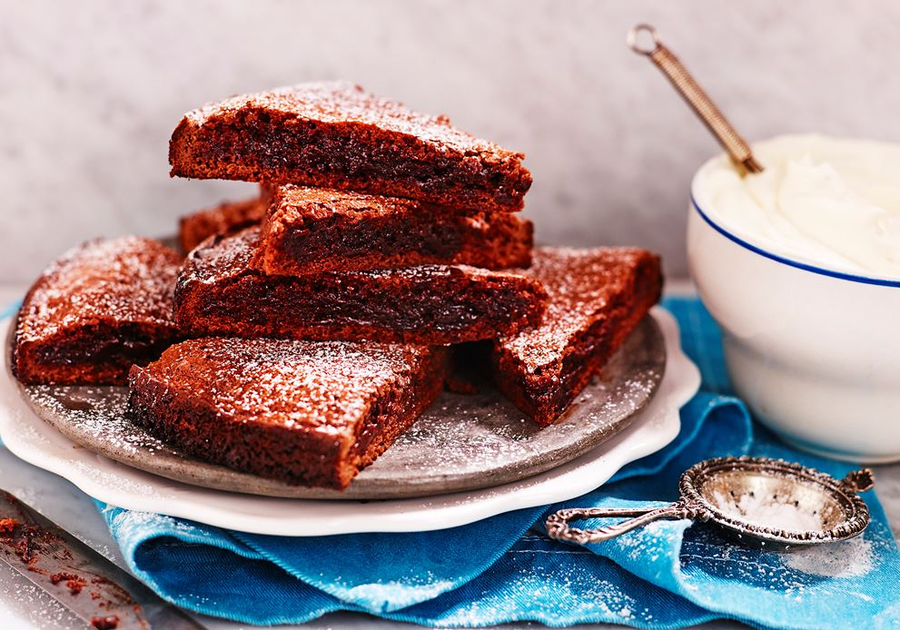

Fannys specialkladdkaka

Tillagningstid: 30 min
Ingredienser
- Smör 100g
- Strösocker 2 1/2 dl
- Ägg 2st
- Vetemjöl 1dl
- Kakao 3msk
- Vaniljsocker 2 tsk
- Smält mjölkchoklad 100g
Till servering
Vispgrädde
Gör såhär
- Sätt ugnen på 175 grader
- Smält smöret i en kastrull. Lyft av kastrullen från plattan
- Rör ner socker och ägg, blanda väl. Rör ner övriga ingredienser så att allt blir väl blandat
- Häll smeten i en smord och bröad form med löstagbar kant, ca 24cm i diameter
- Grädda mitt i ugnen ca 15 min. Kakan blir låg med ganska hård yta och lite kladdig i mitten
- Låt kakan kallna. Pudra över florsocker. Servera med grädde eller glass och bär